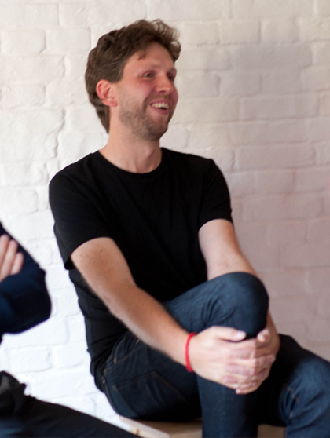

— L'artiste
Karsten Schmidt
Designer spécialisé dans la programmation informatique, Karsten Schmidt (aka toxi) interroge
depuis 20 ans les interactions
entre disciplines artistiques, le design
et les savoirs-faire manuels.
Fasciné par l'art digital, il explore activement
les terrains de la transdisciplinarité, du design
au développement d'outils novateurs
et d'applications.
C'est un concepteur infatigable qui recherche une création libre, une approche du design basée
sur le traitement des idées et le développement de logiciels qu'il puisse transmettre et enseigner.
Karsten Schmidt participe à des projets variés,
de la recherche avec le studio PostSpectacular,
au projet proccessing.org et à la réalisation
de plusieurs livres sur le design graphique
et la programmation.
Très médiatisé, son travail a également fait l'objet d'une exposition au MOMA de New York.
